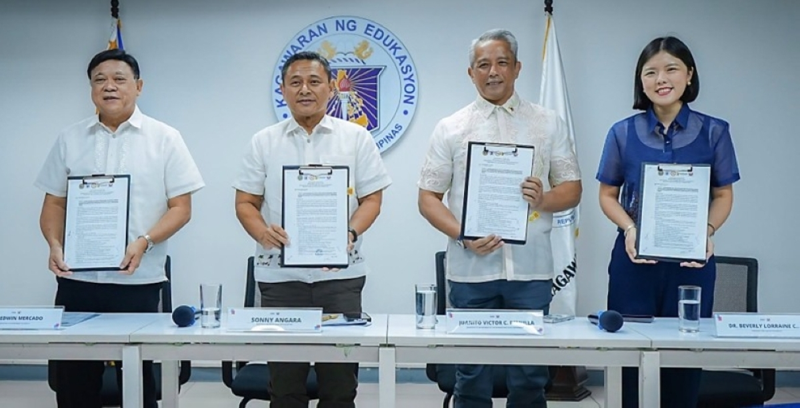

Magnitude 7.7 earthquake strikes southern Panama; government declares a state of emergency
9–10 Oct 2026
CBC / Newsroom Panama: The quake struck near Pitaloza Arriba in Herrera province, followed by a 6.6 shock and dozens of aftershocks. Buildings and roads were damaged in Veraguas, Herrera and Los Santos, with injuries reported and no deaths confirmed so far. Tsunami warnings were lifted.
Open CBC
Trump says “it’s time for Ukraine to get a new president” after Zelensky condemns the Russian diesel deal
10 Oct 2026
BBC: The US suspends sanctions on Russian diesel exports until 7 April, starting with 300,000 tonnes now and 500,000 in November, aimed at fuel prices before the midterms. EU foreign-policy chief Kaja Kallas says it gives Moscow more money for the war.
Open BBC
Russian aerial bombs kill seven, including three children, in Ukraine’s Zaporizhzhia region
10 Oct 2026
AP: Bombs hit residential buildings and wounded at least 10, the regional military administration said Saturday, a day after the diesel deal was announced. Kyiv warns the deal will help bankroll the war.
Open AP
One year on, the US-brokered Gaza ceasefire has stalled, with Israeli strikes continuing and almost nothing rebuilt
10 Oct 2026
Washington Post / AP: The deal halted major operations and freed all remaining hostages. A new Palestinian administration, an international force, Hamas disarmament and Israel’s pullback from more than half the territory have not happened.
Open Washington Post

DOH, DepEd, PhilHealth and DILG launch Yakap School Health and Protection to bring screenings and care into schools
11 Oct 2026
Manila Times: A joint circular brings PhilHealth’s Yakap package to public and private schools, learning centers and child development centers, with early detection of developmental delays, medicines, diagnostics and care navigators for referrals. The target is all 26 million learners, with parental consent built in.
Open Manila Times
DepEd expands the Kaagapay program nationwide to train parents as co-educators against bullying
6 Oct 2026
Inquirer: Sessions teach parents and caregivers positive discipline and early signs of behavioral and emotional trouble. Rollout has started in NCR, Calabarzon, CAR, Cagayan Valley, Central Luzon, Mimaropa and Bicol, working through PTAs and school councils.
Open Inquirer
Researchers say OpenAI’s ChatGPT for Teens failed their mental-health safety tests
9 Oct 2026
NPR: Testers posing as teens found the teen version still gave risky responses on mental-health topics. Worth a talk at home about which AI apps kids use and what they ask them.
Open NPR
Carlos Yulo and Alex Eala named PSA Athletes of the Year
10 Oct 2026
Inquirer: Yulo wins it for a second straight year after Asian Championships floor gold and a world vault title; Eala gets it for the first time after her first WTA title, Wimbledon and US Open milestones and SEA Games gold. Awards night is next month. Eala plays the Wuhan WTA 1000 from 12 Oct.
Open Inquirer
EJ Obiena caps his 2026 season with Asian Games pole-vault gold
10 Oct 2026
Journal News: Obiena was one of three Filipino golds in Nagoya, with Yulo and Jeus Yape, in a record 29-medal haul. Each gold earns ₱2 million under RA 10699.
Open Journal News
SpaceX launches 21 Northrop Grumman satellites for the Space Force’s missile-warning and data network
10 Oct 2026
Space.com / SpaceNews: The Falcon 9 lifted off from Vandenberg at 3:39 p.m. PH after a 5-day delay, carrying data-transport satellites for the Space Development Agency’s Tranche 1. The booster landed on its sixth flight. It was the 111th Falcon 9 launch of 2026. Next up: the CRS-35 cargo Dragon to the ISS, targeting 6:33 p.m. PH Tuesday, 13 Oct.
Open Space.com